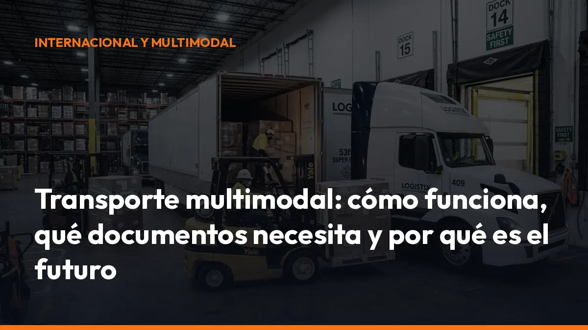

Transporte multimodal: cómo funciona, qué documentos necesita y por qué es el futuro

La clave está en coordinar todo el trayecto con un único contrato de transporte y un documento principal. Así puedes mover una carga puerta a puerta con menos gestiones, mayor trazabilidad y un control más sencillo de cada fase.
En 2026, además, la digitalización deja de ser una ventaja opcional. El documento electrónico de control será obligatorio en España desde el 5 de octubre de 2026 para el transporte público nacional de mercancías por carretera. Prepárate ahora y evita duplicidades, pérdidas de documentos y problemas durante una inspección.
¿Qué es el transporte multimodal?
El transporte multimodal utiliza dos o más medios de transporte dentro de una misma operación logística.
Por ejemplo:
1. Un camión recoge la mercancía en una fábrica de Valencia. 2. La carga viaja en tren hasta una terminal portuaria. 3. Un buque la transporta hasta Italia. 4. Otro camión realiza la entrega final.
La mercancía permanece dentro de una unidad de carga, normalmente un contenedor, una caja móvil o un semirremolque. No es necesario manipular el contenido en cada cambio de vehículo.
Transporte multimodal frente a transporte intermodal
Ambos sistemas combinan diferentes medios, pero existe una diferencia importante:
- Transporte multimodal: normalmente se organiza bajo un único contrato y un documento principal para todo el recorrido.
- Transporte intermodal: puede utilizar varios contratos y documentos independientes, uno por cada tramo o modo de transporte.
En la práctica, el multimodal simplifica la gestión porque el operador coordina la operación completa. Tú no tienes que negociar por separado cada fase ni perseguir documentos de diferentes proveedores.
Un contrato. Una visión global. Menos complicaciones.
¿Cómo funciona una operación multimodal?
El proceso comienza cuando el cargador define el origen, el destino, la mercancía y los requisitos de entrega.
Después, el operador multimodal diseña la combinación más eficiente:
- Carretera: flexibilidad y recogida puerta a puerta.
- Ferrocarril: capacidad para largas distancias y menor dependencia de la carretera.
- Marítimo: gran volumen y conexión entre continentes.
- Aéreo: rapidez para mercancías urgentes o de alto valor.
El operador reserva los distintos servicios, coordina los transbordos y mantiene la información centralizada.
La unidad de carga puede pasar de un camión a un tren o a un buque sin abrirse. Esto reduce:
- Manipulaciones.
- Riesgo de daños.
- Robos y pérdidas.
- Tiempos de espera.
- Errores en la identificación de la mercancía.
La unidad de carga: el elemento que conecta todos los modos
La unidad de carga permite que la mercancía viaje de forma continua, aunque cambie el vehículo.
Las más habituales son:
- Contenedor: utilizado especialmente en transporte marítimo, ferroviario y por carretera.
- Caja móvil: estructura intercambiable diseñada para facilitar el traslado entre camión y tren.
- Semirremolque: puede transportarse en determinados servicios ferroviarios o marítimos.
- Palé agrupado: útil en operaciones combinadas de menor volumen.
Cada unidad debe identificarse correctamente. El número de contenedor, el precinto, el código de envío y los datos de la mercancía deben coincidir en todos los documentos.
¿Qué documentos necesita el transporte multimodal?
La documentación depende de los países, los modos utilizados, el tipo de mercancía y las condiciones del contrato. Sin embargo, existen varios documentos habituales.
FIATA FBL: el documento multimodal principal
El FIATA Multimodal Transport Bill of Lading, conocido como FIATA FBL, es un documento creado para operaciones multimodales organizadas por transitarios.
Puede cubrir el trayecto completo bajo un único documento. FIATA también contempla el FBL digital y el FWB, un documento de transporte multimodal no negociable.
Consulta los documentos oficiales de FIATA para conocer sus modelos y condiciones de uso.
El FBL puede incluir:
- Datos del cargador y del destinatario.
- Origen y destino.
- Descripción de la mercancía.
- Unidad de carga y número de precinto.
- Medios de transporte previstos.
- Condiciones de entrega.
- Instrucciones sobre la carga.
- Información sobre fletes y responsabilidades.
e-CMR en los tramos por carretera
Cuando una fase se realiza por carretera, puede utilizarse la e-CMR, la versión electrónica de la carta de porte internacional regulada por el Convenio CMR.
En 2026, la documentación digital gana protagonismo por dos motivos:
- El DeCA será obligatorio en España desde el 5 de octubre de 2026 para el transporte público nacional de mercancías por carretera.
- La Unión Europea avanza hacia la aceptación de información electrónica mediante el marco eFTI.
Importante: el e-CMR no se convierte automáticamente en obligatorio para todos los transportes internacionales en España. Su aplicación depende del ámbito de la operación y de los países implicados. Sin embargo, es una solución práctica para reducir papel, mejorar la prueba de entrega y centralizar la información.
En los transportes nacionales sujetos al DeCA, el documento debe existir en formato electrónico antes de iniciar el servicio. Puede incorporar un código QR o un sistema que permita su consulta durante un control.
Revisa también la guía sobre el Documento Electrónico de Control.
Documentos adicionales
Según la operación, también puedes necesitar:
- Factura comercial.
- Lista de carga o packing list.
- Documentación aduanera.
- Certificados de origen.
- Documentos de mercancías peligrosas.
- Póliza o certificado de seguro.
- Autorizaciones especiales.
- Prueba de entrega.
No guardes estos documentos en conversaciones dispersas o carpetas imposibles de localizar. Centralízalos y accede a ellos directamente desde el móvil o el ordenador.
¿Quién responde en el transporte multimodal?
El operador multimodal coordina los diferentes tramos y, cuando emite un documento como el FBL, puede asumir la posición de porteador contractual frente al cargador.
Esto significa que debe organizar el transporte desde el origen hasta el destino conforme a las condiciones pactadas. No obstante, la responsabilidad concreta puede estar condicionada por el tramo en el que se produzca el daño o la pérdida.
Pueden aplicarse diferentes regímenes:
- Carretera: Convenio CMR.
- Marítimo: reglas y condiciones marítimas aplicables al contrato.
- Ferrocarril: normativa específica del transporte ferroviario.
- Aéreo: convenio internacional correspondiente.
La digitalización no cambia por sí sola los límites de responsabilidad. Lo que sí mejora es la prueba:
- Quién recibió la mercancía.
- Cuándo se produjo un transbordo.
- En qué estado estaba la unidad de carga.
- Quién registró una incidencia.
- Cuándo se firmó la entrega.
Una trazabilidad completa reduce discusiones y acelera la gestión de reclamaciones.
Trazabilidad: controla cada movimiento en tiempo real
La trazabilidad es uno de los grandes beneficios del transporte multimodal digitalizado.
Cada envío puede asociarse a:
- Un identificador único.
- Un contenedor o caja móvil.
- Un número de precinto.
- Un documento FIATA.
- Una e-CMR para el tramo por carretera.
- Un código QR.
- Registros de carga, descarga y transbordo.
Con esta información, puedes saber si la mercancía está:
- En la terminal de origen.
- En tránsito ferroviario.
- En el puerto.
- A bordo del buque.
- En la terminal de destino.
- En reparto final.
El objetivo no es acumular más documentos. Es trabajar con digital transport documents y logistics documentation conectados, accesibles y verificables.
Transporte multimodal y sostenibilidad
La multimodalidad también ayuda a construir un transporte de mercancías más sostenible.
El ferrocarril y el transporte marítimo pueden asumir los trayectos más largos, mientras que la carretera se utiliza para la recogida y la entrega final. Esta combinación permite:
- Reducir kilómetros por carretera.
- Optimizar la capacidad de cada vehículo.
- Disminuir el consumo de combustible.
- Evitar viajes parcialmente vacíos.
- Mejorar la planificación de rutas.
- Reducir emisiones por unidad transportada.
No se trata de eliminar el transporte por carretera. Se trata de utilizar cada modo donde resulta más eficiente.
La empresa que combina correctamente carretera, tren y barco puede ganar en coste, capacidad, previsibilidad y sostenibilidad.
Cómo prepararte para el transporte multimodal en 2026
Empieza con un flujo documental claro:
1. Identifica la unidad de carga. Registra contenedor, caja móvil, semirremolque y precinto. 2. Define el contrato principal. Determina si utilizarás FBL, FWB u otro documento. 3. Documenta cada tramo. Añade e-CMR cuando corresponda al transporte por carretera. 4. Prepara el DeCA. Desde el 5 de octubre de 2026, el transporte nacional sujeto a la obligación deberá disponer del documento electrónico. 5. Registra los eventos. Carga, descarga, transbordo, incidencia y entrega. 6. Conserva las evidencias. Guarda documentos, firmas, fotografías y comprobantes. 7. Forma al equipo. El conductor debe saber dónde encontrar la documentación durante un control.
Con Mi Carga puedes avanzar hacia una gestión documental más sencilla, rápida y accesible para tu empresa y tus conductores. Centraliza la documentación del transporte y tenla disponible directamente desde cualquier dispositivo.
Conclusión: multimodalidad para competir mejor
El transporte multimodal ya no es solo una alternativa para grandes operadores internacionales. También es una oportunidad para empresas de transporte, transitarios y autónomos que quieren trabajar con más control.
La combinación de una unidad de carga, un documento principal y herramientas digitales permite reducir errores y mejorar la coordinación.
Más visibilidad. Menos papel. Mejor servicio.
Empieza a preparar tus documentos digitales antes de que llegue la obligación de octubre de 2026. Solicita información a Mi Carga y descubre cómo simplificar tu gestión documental sin complicaciones.
¿Hablamos?
Preguntas frecuentes sobre el transporte multimodal
¿Cuál es la diferencia entre transporte multimodal e intermodal?
El transporte multimodal suele organizarse con un único contrato y documento principal para todo el recorrido. El intermodal utiliza varios medios de transporte, pero puede funcionar con contratos y documentos separados para cada tramo.
¿Es obligatorio utilizar el FIATA FBL?
No todas las operaciones están obligadas a utilizar un FBL. Es un documento estándar especialmente útil para transitarios y operadores que coordinan un transporte multimodal bajo un único contrato.
¿El e-CMR será obligatorio en España en 2026?
El e-CMR no es obligatorio de forma general para todos los transportes internacionales. En España, lo que será obligatorio desde el 5 de octubre de 2026 es el documento electrónico de control para determinados transportes públicos nacionales de mercancías por carretera. El e-CMR puede utilizarse cuando corresponda y, si contiene la información exigida, puede ayudar a cumplir la obligación documental aplicable.
¿Qué ventajas tiene digitalizar la documentación multimodal?
Obtienes acceso inmediato, trazabilidad, menos errores, mejor coordinación entre operadores y una prueba más sólida de cada fase del transporte. Además, puedes responder más rápido durante una inspección o ante una incidencia.
Hazlo de forma digital y tendrás una ventaja inmediata: podrás comprobar qué unidad se cargó, cuándo se transfirió y quién la recibió.
DeCA, carta de porte y ADR, en PDF, con QR y archivo automático en la nube.
Empezar con 10 documentos gratisArtículo informativo. Consulta siempre el caso concreto de tu operación. ¿Dudas? Escríbenos.